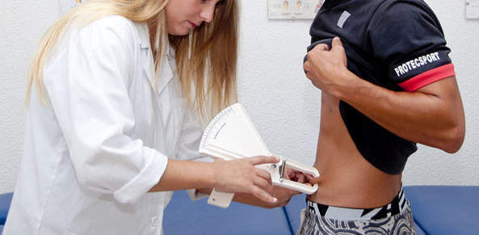

Descripción Descripcion Descripcion
Toda disciplina deportiva exige de cada individuo cierta estructura y silueta corporal para lograr un buen desempeño. En consecuencia, un adecuado control y vigilancia de la composición corporal se puede traducir en importantes beneficios para los atletas, tanto en la optimización de su rendimiento como en la salud. (Rodríguez A., 2004)(21) La determinación de la forma del físico a partir de variables antropométricas también es una parte importante en la evaluación integral de un atleta y constituye en si mismo un elemento que puede ser empleado para la detección y selección, para la ubicación del deportista en una disciplina o en una posición especifica. Las ventajas que proporciona una adecuada morfología son evidentes (Kerr, y Cols, 1995)(23). La evaluación de la composición corporal en los atletas puede ayudar a optimizar el rendimiento competitivo y controlar el éxito de los regímenes de entrenamiento y por ello, es de gran importancia para los profesionales del deporte.
Figura 1. Médico tomando medidas antropométricas. Fuente: http://altorendimiento.com/aplicaciones-de-la-antropometria-para-los-profesionales-de-la-salud-el-deporte/
La composición corporal mejorada en los atletas se asocia con mejoras en la aptitud cardiorrespiratoria y la fuerza. La composición corporal también puede estar relacionada con complicaciones de salud, porque pueden surgir problemas médicos en atletas con muy poca masa corporal, cambios de masa extrema debido a deshidratación o trastornos alimenticios. La idea detrás de la biometría aplicada al deporte es recolectar la mayor cantidad posible de datos biométricos de los atletas para mejorar su rendimiento. Para dicha tarea se han comenzado a desarrollar dispositivos con complejos sensores para analizar a los atletas. Desde una simple pulsera, hasta equipos más complejos posicionados en el pecho. Estos equipos se encargan de medir parámetros tan diversos como ritmo cardíaco, temperatura corporal, calorías quemadas, ritmo de respiración, patrones de sueño, etc.
“La biometría en el deporte”. En: ex-cle.com. Disponible en:http://www.ex-cle.com/la-biometria-en-el-deporte/Consultado: 29 de agosto de 2019, 06:03 pm.
“Criterios biométricos para la selección de futbolistas”. En: repositoriodigital.ipn.mx. Disponible en:https://www.repositoriodigital.ipn.mx/bitstream/123456789/8970/1/TESIS%20IVAN.pdfConsultado: 29 de agosto de 2019, 06:03 pm.
Diana A. Santos, John A. Dawson, Catarina N. Matias, Paulo M. Rocha, Cláudia S. Minderico, David B. Allison, Luís B. Sardinha, Analiza M. Silva. (May 15, 2014). Reference Values for Body Composition and Anthropometric Measurements in Athletes. PLOS.Consulta: 29 de Agosto.